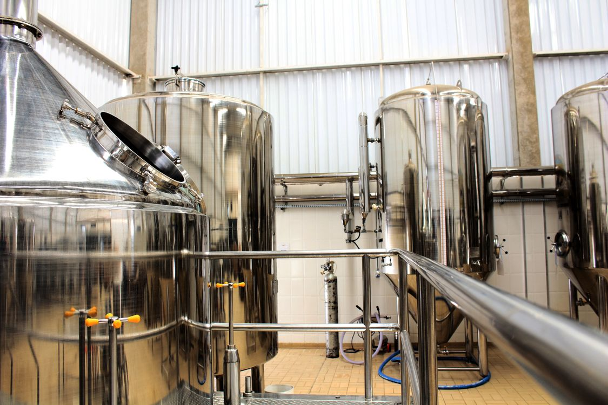

Operations consulting & implementation
Sort out recurring problems with orders, production handoffs, procedures and reporting. I can help investigate what’s going wrong and put the changes into use.
Services
For owners and operations leads in small to midsize businesses, especially food, beverage and manufacturing. Projects can include an order process, a reporting tool, written procedures or formulation and fermentation trials.

Sort out recurring problems with orders, production handoffs, procedures and reporting. I can help investigate what’s going wrong and put the changes into use.
Plan and carry out formulation or fermentation trials, review the results and document how the product is made.
I can also improve the software you already use or build automation and AI tools for reporting, reminders and repeated data entry.
 Food & beverage product development
Food & beverage product development
I help develop new food and beverage products, refine formulations and explore upcycling opportunities.
My experience includes wet-lab quality control, working with a range of organisms, and developing and running tests. I use the scientific method to define the question, design trials, track outcomes and use the findings to guide development.
We’ll identify any laboratory testing or specialist input needed when we scope the work.
Discuss a product project
Ways to work together
Hire me for a project or regular part-time work. A focused review is available when we need to investigate the problem first.
Set up reporting, document a procedure or plan and run product trials.
The proposal sets out what you’ll receive, timing, fees and how we’ll check the work.
I coordinate projects, prepare reports or introduce new procedures alongside your team.
We agree on hours, responsibilities, fees and when to review progress.
Explore ongoing supportInvestigate a recurring problem, such as incomplete orders or repeated production delays, before choosing a change.
You receive findings, priorities, a written recommendation and a debrief. Implementation is scoped separately.
One workflow, about two weeks. Fixed fee: $2,500 CAD plus applicable taxes. Scope and timing are confirmed before starting.
Practical AI & automation
I improve forms, spreadsheets and reporting, and connect tools so details don’t have to be entered in several places.
That can include recurring reports, reminders and AI-assisted drafts, with a person checking the output. We can often start with the software you already use.
Explore workflow automation & practical AIA few practical questions
No. Tell me what’s happening and what you need help with. We’ll discuss whether my experience fits and where to start.
Yes, when the problem and intended change are clear enough to scope the work. If they need more investigation, a focused review can help establish the next step.
No. AI is one of the tools I build with. Sometimes the useful improvement is a clearer decision, a better handoff or a simple form, and I'll tell you when that's the case.
The proposal covers the work, what you’ll receive, who’s responsible, timing and fees. It also states whether implementation or ongoing support is included.
Owners and operations leads in manufacturing and small to midsize businesses, especially food and beverage. I also work with startups and other sectors when the work fits my experience.
Yes. A business workshop can be scoped around a specific learning need, such as fermentation or using a new process or AI tool. We agree on the audience, practical outcome and format. Consumer workshops through Ottawa Culture Club are a separate activity.
Discuss a business workshopMuch of the research, process work, reporting and system development can be done remotely across Canada. Ottawa-based visits can be agreed where seeing the work in person would help.
Let’s talk
Describe the process, product or project. We’ll discuss whether I can help.